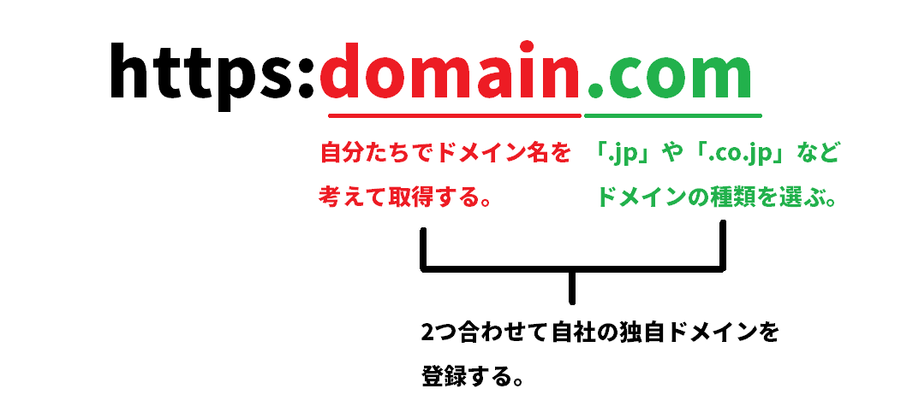
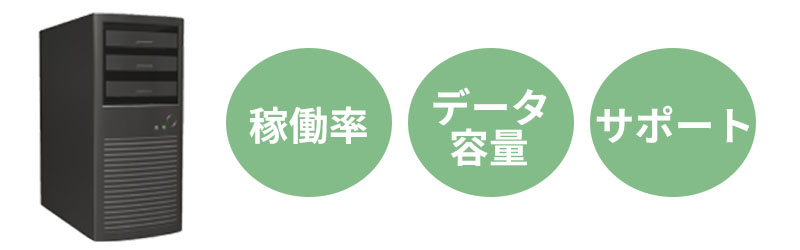
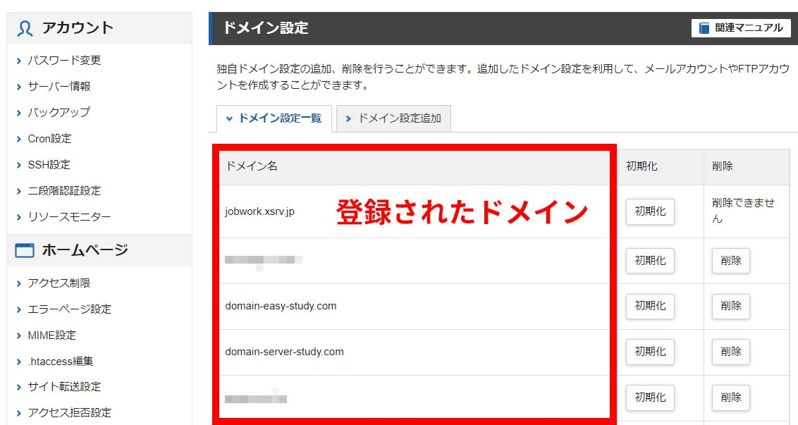
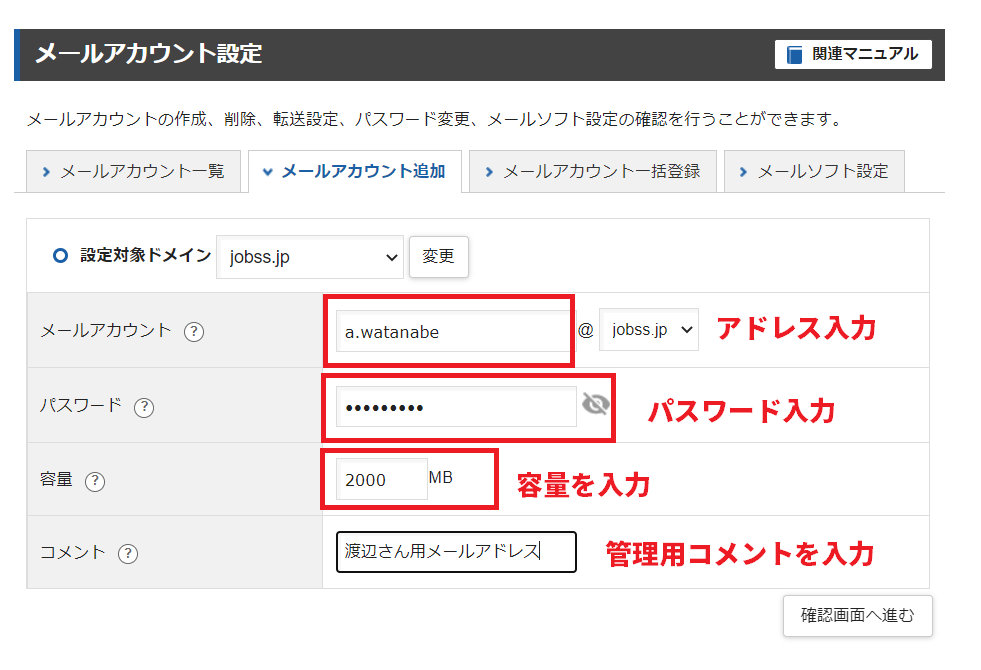
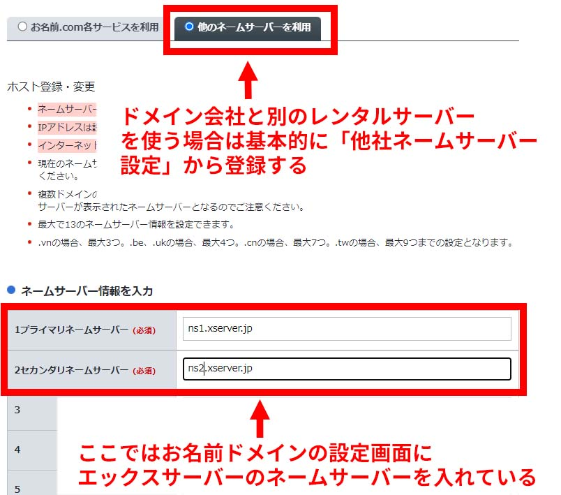
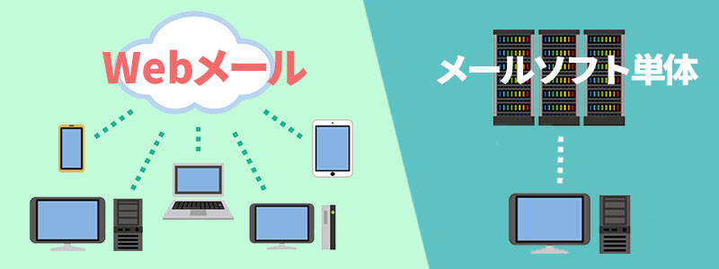

「仕事で自分のメールアドレスが欲しい・・・」
「会社用のメールアドレスを10人分作りたい」
法人として新しくメールアドレスを取得するには、どうしたらいいのか？
このページでは法人向けメールアドレスの作成方法と、様々なメールサービスから最適なサービスを選ぶための知識、アドレス名の決め方のポイントなど。 メールアドレス作りに役立つ情報を紹介しています。
法人専用のメールアドレスを作成するには「独自ドメイン」と「レンタルサーバー」を契約して作ります。
この方法がメールアドレスを作る最も一般的な方法だと言えるでしょう。
そこで最初にメールアドレスを作るための準備として、以下の3点について説明をしていきたいと思います。
メールアドレス作りの第１工程は、お名前.comやエックスサーバードメインなどのドメイン事業者で独自ドメインを購入することから始まります。
独自ドメインを簡単に説明すると、2つの要素から成り立っています。
1つ目の要素はドメイン名。ドメイン購入時に自社で考えたドメイン名（キーワード）を入力して購入します。
2つ目の要素はトップレベルドメインになります。トップレベルドメインとは「.com」「.jp」「.co.jp」などのドメインの種類を意味します。
例えば「company.jp」という独自ドメインの場合であれば「company」までがドメイン名の部分になり、「.jp」がトップレベルドメインの部分になります。

ドメインを取得する際はこの2つの要素をよく検討して、ドメイン事業者でドメイン登録をすることになります。
購入した独自ドメインは、WebサイトのURL、メールアドレス、名刺、パンフレットなどなど様々な所で露出することになります。
会社のイメージを表すものになりますので、適切な独自ドメイン名を考えて取得することが重要になってきます。
・良いドメイン名の決め方 5つのアイディアで最適な独自ドメインを考える
独自ドメインは2億ドメイン近く登録されていますが、1つとして同じドメインはありません。 つまりドメインを登録した時点でそれは自社だけのオリジナルのドメインを持っていることになります。
例えば当サイトの場合「domain-srver-study.com」というドメインを契約していますが、このドメインからメールアドレスを作ると以下のようなアドレスが作れます。
info@domain-srver-study.com（会社用メール）
watanabe@domain-srver-study.com（渡辺さんのメール）
info、watanabeといった赤字の部分は、メールアドレスを作るときに自社で自由に設定することができます。
法人がメールアドレスを作る場合のケーススタディについてはページ後半で詳しく説明しています。
ドメイン会社で独自ドメインを購入するにあたり、事前に知っておくと良い点は以下になります。
※JPRS発表、JPドメイン名の登録数（12月1日時点）
独自ドメインは様々な会社で登録することが出来ますが、ここではドメイン登録数が多い人気のドメイン事業者を紹介します。
圧倒的に人気なのがお名前ドメインになっています。これまでに累計2500万のドメイン登録数があり、ここ1社でシェアの半数以上を占めています。 法人向けの専用機能も多くなっていて、支払い期限もメールだけでなくハガキでも通知してくれます。
エックスドメインに関してはレンタルサーバーでシェアNo1となるエックスサーバーの提携ドメイン会社になります。 もしエックスサーバーを契約する場合は、一緒にエックスドメインを選ぶことでネームサーバー設定が簡易化されるメリットがあります。
| お名前.com | エックスドメイン | ムームードメイン | |
|---|---|---|---|
| ドメイン種類 | 580種類 | 70種類 | 400種類 |
| 累計登録数 | 2800万 | 未公表 | 400万件 |
| Whois代行 | あり | あり | あり |
| 支払い期限 ハガキ通知 | あり | － | － |
| 機能 | お名前ID付け替え TMCH管理 ドメインモニタリング |
ドメインロック |

ドメインを取得したら次にレンタルサーバーを契約しましょう。 独自ドメインがドメインの権利を購入するのに対して、レンタルサーバーではメールアドレス作成、送受信データの保存を行います。
それでは、レンタルサーバーが関わってくることを説明していきます。
まず、メールアドレスの作成はレンタルサーバーが担っている役割になります。 メールアカウントを1つずつ作成し、それぞれにメールボックス容量を決めます。
多くのレンタルサーバーでは50個や100個といった数のメールアドレスが作れるようになっています。 大半のレンタルサーバーでは「メーリングリスト」や「Webメール機能」もついています。
レンタルサーバーはメールやWebサイトのデータ保管場所になります。 そのため、メールの送受信データはレンタルサーバーにデータが蓄積されていきます。
メールアドレスごとにデータの使用容量も確認できるので、メール管理者は各アカウントのメールボックスが一杯にならないか時折チェックが必要になります。
テキストメールだけのやり取りがほとんどの場合であれば1メールボックスあたり1GBでも充分だと思いますが、 書類や動画データなどの大きなファイルのやり取りが発生する場合は5GB、10GBやそれ以上のメールボックス容量が必要になってきます。
その他にも、管理者は自動バックアップを取ったり、1人ごとのメールアカウントのデータ容量を決めたり、各メールアカウントのメール内容をチェックすることが出来ます。
サーバーの安定性を測るデータとして「稼働率」と呼ばれる言葉があります。 稼働率の数値が高ければそれだけサーバーダウンしない、良いサービスということになります。
サーバーダウンしてしまうとメールが送受信できなくなり一時的にサービス停止状態になります。
この稼働率は100%が1番良い状態になります。 稼働率が99.99％であれば1日8秒ほどしか落ちない計算になります。法人であれば99.99%ぐらいの稼働率となっているプランを選んだ方が良いでしょう。
サーバーの安定性だけでなくメールを送る時のレスポンスの速さにも関わってきます。
当ページで紹介しているレンタルサーバーは高速化に対応しているプランも多く、性能が良い事業者を紹介するようにしていますが スペックや管理体制の問題があったり、一時的にサーバーが重くなってしまったりする場合には、メールを送ってから10秒～20秒とタイムラグが発生するような場合もあります。
レンタルサーバーを借りるにあたって、事前に知っておいて欲しい点は以下になります。
レンタルサーバーは大きく分ると一般向けのプランと法人専用のビジネスプランに分けることができます。
2つのプランの大きな違いはビジネスプランの場合だと「サポート対応」「セキュリティ」「サーバー管理体制」などのサービスが充実していてより法人向けになっています。 例えば、設定代行サービスがあったり、メールサーバーとWebサーバーをわけて別々のハードウェアで管理していたりします。
レンタルサーバーはプランによって料金やサービス内容がそれなりに違ってきますので、よく比較してサービスを検討しましょう。
様々な企業がサービスを提供していているため20社～30社以上のサービスがあります。 ここでは法人に向けて紹介したい人気レンタルサーバーとして「エックスサーバー」「CPIレンタルサーバー」「iCLUSTA+」「Kagoya」を紹介します。
最もシェアを持っていて人気のレンタルサーバーはエックスサーバーになります。運営サイトは230万を超えていて、法人企業も16万社が利用しています。
月額1,320円ながら国内No1のサーバー速度に、稼働率が99.99%の安定稼働。さらにサーバーの引越しや各種設定など設定代行を依頼することが出来ます。 ビジネスプランだと設定代行を毎月無料で3回まで依頼できるようになります。
| 会社名 | 稼働率 | サーバー管理体制 | 料金 | 設定代行 | 容量 |
|---|---|---|---|---|---|
| エックスサーバー | 実稼働率 99.99% |
同一管理 | 初期費用3,300円 月額1,320円～ |
データ移転 33,000円 |
300GB～ 500GB |
| Xserverビジネス | SLA保障 99.99% |
同一管理 | 初期費用16,500円 月額5,016円～ |
データ移転 0円 |
300GB～ 500GB |
| iCLUSTA＋ | SLA保証 100% |
同一管理 | 初期費用5,500円 月額1,027円 |
データ移転 33,000円 |
300GB～ 750GB |
| CPIレンタルサーバー | SLA保証 100% |
Web&メール 別管理 |
初期費用22,000円 月額4,840円 |
データ移転 参考価格 |
500GB |
| ヘテムル | 実稼働率 99.99% |
Web&メール 別管理 |
初期費用0円 月額2,200円 |
データ移転 33,000円 |
500GB |
エックスサーバーはWebサイト稼働数が230万サイトあります。うち法人契約が16万社ありシェア1位のレンタルサーバーになっています。
人気の理由は圧倒的なスペックのサーバー機器。それと99.99％という安定稼働を実現している点も魅惑でしょう。 稼働率99.99%というのは1日にわずか8秒しか落ちない稼働率になります。 速度も速いためメールアドレスだけでなくWebサイト制作にも最適になっています。
月額1,320円で価格帯は一般向けプランの価格帯になりますが、十分すぎるスペックと安定感があります。
また、エックスサーバーではより法人向けのプランとして「Xserverビジネス」というプランも展開しています。 料金は月額5,016円からになっています（長期契約で月3,009円まで割引）。
一般プランとの最大の違いはサポート。ビジネスプランでは毎月3回まで無料で設定をお任せできます。 サーバーを引越しする場合であれば「Wordpressの移転作業」「メールアドレス作成」「ネームサーバー設定」などもお任せすることが出来ます。
CPIレンタルサーバーはKDDIコミュニケーションズが提供する法人向けのサービスになります。
主な特徴はWebサーバーとメールサーバーが別々のハードウェアになっていること。 そのためWebサイトのアクセスが一時的に増えてWebサーバーが混雑していても、メールサーバーには影響が及びません。
法人向けとして安定性に重きを置いた管理体制になっているので、メールサーバーとして適切だと言えるでしょう。 データ容量はWeb300GB、メール200GBで用意されています。
法人利用率が80％で、豊富なプラン設定が人気のKagoya。共用サーバーだけでなくメール専用サーバープランも提供されています。
CPIレンタルサーバーと同様にWebサーバーとメールサーバーが別々になっているので、より安定したメール管理を実践できます。
メール専用サーバーは「共用プラン」「専用プラン」など5種類以上のプランに分けれていて料金も440円から10,000円以上と様々。 メールサーバー単体でサービスを探していて、データ容量など様々なプランを検討をしたい場合は、Kagoyaは外せません。
安定性に優れた法人向け共用レンタルサーバーとして提供されているiCLUSTA+。
稼働率がSLA保証として100%に設定されているのが特徴と言えます。SLA保証というのはあくまでも数値の保証制度になりますが、 実際の稼働率も100%を達成している月が多くなっているので、安定性は確保されているサービスだと言えるでしょう。
33,000円で引越し作業をお任せできるお引越しパックも人気で、2019年度では10,020件の移転実績があります。
独自ドメインを取得して、かつレンタルサーバーの契約をしたら、後はいくつかの設定を実施すればメールアドレスを作成することが出来るようになります。 では、実際にどのようにしてメールアドレスを作るかを説明していきましょう。
具体的にはドメイン登録、メールアカウント作成、ネームサーバー設定と呼ばれる”3つの設定”を行うことでメールアカウントが作成できて、 メールも送受信できるようになります。
それぞれの設定についてかんたんに説明をしてみます。
まずはレンタルサーバー側の管理画面で「ドメイン設定」と呼ばれる設定を行います。
これは購入した独自ドメインをレンタルサーバー側に登録をする設定になります。 「ドメイン登録」の設定はとてもに簡単にできます。
例えばエックスサーバーであれば管理画面から「ドメイン設定」＞「ドメイン設定追加」＞購入したドメイン名を入力することで登録設定は完了します。
このドメイン登録を行うことで、以下のように独自ドメインがレンタルサーバーに認識されて、そのドメイン名でメールアドレスが作れるようになります。
※エックスサーバーの「ドメイン登録」画面

ドメイン登録が完了したら、メールアドレスの作成ができるようになります。 早速、メールアカウント設定より作っていきましょう。
こちらもエックスサーバーで例えると「メールアカウント設定」＞登録ドメインを選択して＞「メールアカウント追加」＞メールアカウントの各要項を入力することで メールアドレスの生成が完了します。
この時に入力が必要な情報はメールアドレス名、パスワード、メールボックス容量の3つになります。 メールアドレスやパスワードは事前に考えておきましょう。
メールボックス容量を超えた場合、ボックスが一杯になりメールが受信できなくなります。 メールのやり取りが多い会社は、1アカウントで大体どれくらいの容量が必要になるのかについても事前に考えておきましょう。 ちなみにエックスサーバーの場合は1アカウントあたり10GB（10,000MB）まで設定できます。
※エックスサーバーの「メールアカウント設定」画面

レンタルサーバー側で「ドメイン登録」と「メールアカウントの作成」をした時点でメールアドレスは出来上がっています。
しかし、このままではメールアカウントの箱が出来ているだけなので仮にOutlookのよなメーラーにアドレスを設定したとても、まだメールの送受信は出来ません。
メールの送受信をするためには、どのレンタルサーバー事業者のサーバーを使っているのか、独自ドメイン側にそれを伝える必要があります。 この「レンタルサーバーの場所」と「独自ドメイン」の2つを紐づける設定を「ネームサーバー設定」と呼びます。
具体的な設定方法を説明します。
まず、ドメイン事業者の管理画面で「ネームサーバー設定」の画面に移動して利用先となるレンタルサーバー事業者のネームサーバーを入力します。 これによって「独自ドメインをどのレンタルサーバーに向けるか」について設定することが出来ます。
例えば、自社が契約しているレンタルサーバーがエックスサーバーだったら、エックスサーバーのネームサーバーとなる「ns1.xserver.jp」を下の画面のように入力して設定します。 もし、ConohaWINGを使うのであればConohaWINGが持つネームサーバー「ns-a1.conoha.io」を入力してあげます。
次の画面はドメイン事業者の「お名前.com」におけるネームサーバー設定画面になります。
※お名前ドメインの「ネームサーバー設定」画面

以上で「ドメイン登録」「メールアカウントの作成」、そして「ネームサーバー設定」が完了します。
ここまでの設定を行えばあとは会社で導入するメーラー（OutlookだったりGmail）にアドレスごとの設定を行えば、無事メールの導入が完了し メールができるようになります。
ネームサーバー設定を行ったら「72時間お待ちください」という表示が出ますが、大体のドメイン事業者では数時間で登録が完了します。 半日後あたりに確認をしてみましょう。
ネームサーバー設定についてや、より詳しいメールアドレスの作成方法についての解説は以下のページでも紹介しています。
2章ではメールアドレス作りのポイントについて説明をします。 この章では、実際にメールアドレスを作る時にどんなアドレス名にしたら良いかについて参考例を載せています。
まず、社員別に個別メールアドレスを作る時のポイントについて説明します。 次に業務別や部署別アドレスを作る時のケーススタディを紹介します。
社員ごとのメールアドレス作りについて説明をします。
社員別にアドレスを作る場合は、「名前」＋「名字」の規則性でメールアドレスを作る方法が最も多くの企業で 採用されている方法だと言えるでしょう。
この方法だと同じ苗字の方が会社に入った時でもアドレス名の重複が起こりません。
名前と名字の間に「ドット」を入れる場合と、「アンダーバー」を入れる場合に分かれます。
名字だけで作る会社も多くありますが、同性の方が入ることを考えて最初から名前＋苗字に分けて作った方が無難でしょう。
会社用のインフォアドレスの作り方と、業務別のメールアドレスの作り方を解説します。
業務別アドレスでは「採用アドレス」「お問合せ用アドレス」「その他部署別のアドレス」の参考例について紹介しています。
会社用アドレスには「info」「company」「corp」などの例があります。
ただし「info」は多くの会社が使っているためスパムメールが多かったり、一部のWebサービスへの登録ができないなどのデメリットがあると言われています。
求人や採用向けの連絡用にメールアドレスを作る場合、「recruit」「saiyo」「jinji」などが挙げられます。
採用担当者が、自身の個別アカウントで対応している会社も多くあります。
顧客へのサポート用アドレスを作る場合、「support」「customer」「guest」などが挙げられます。
サポートアドレスは担当者アドレスでそれぞれが対応してしまうと、情報が一括管理できず後々困ることになります。 そのため前もって専用アドレスを作った方が良いでしょう。
その他の部署別メールアドレスの例としては「Sales（営業部）」「soumu（総務部）」などが挙げれます。
部署別アドレスを作ったら、該当メンバーをメーリングリストに登録することでメンバーのみで情報共有ができます。
社員ごとのメールアドレスとは別に、業務や部署ごとのメールアドレスを作っておくことで、情報をそのメールアドレスに 記録しておくことができます。
この場合、新しい方が入った場合でも、その該当するメールアドレスを設定したり、メーリングリストでメンバー追加することで 簡単にメール管理ができるメリットがあります。
新しい方が入る度に個別メールで業務を管理すると、過去に蓄積されたメールが追えないため大変複雑な管理になってしまうでしょう。

独自ドメインとレンタルサーバーを契約してメールアドレスを作ったら、 会社としてどのタイプのメールサービスを導入するべきなのかを考えましょう。
当ページではメールサービスの種類を次のように3つに分けて紹介します。
１．メールソフト（ソフト版Outlook）
２．グループウェア（Gmail、Webメール版Outlook）
３．メール共有システム（メールワイズ、メールディーラーなど）
最近のメールサービスの傾向としては、GmailやWebメール版のOutlookがとても人気になっています。 1人あたり月額料金で680円（Gmailの場合）しますが、Webメールなので社員がスマホでもメールを確認できる強みがあります。外出先でもメール連動できます。
この2つのサービスはWebメールだけでなく、様々なWebソフトとも連動しています。そのため正確にはグループウェアになります。 資料作成ソフト、オンラインストレージ、会議サービス、カレンダーなどのデータが共有できます。
また、会社のパソコンにソフト版のOutlookを入れて管理する方法も根強く多くの企業が取り入れていると思います。 この場合、Webメールではないので基本的には会社のPCのみでメールを管理することになります。
また、業界を特化したメール共有システムも人気があります。この場合、メールワイズやメールディーラーなどのサービスが有名でしょうか。
では、それぞれのサービスについて詳しく説明していきましょう。
| 主なサービス | web メール | メリット | デメリット | |
| メールソフト | ソフト版Outlook | × | ・ソフト買切りなのでコストがかからない | ・Webメールではないので送受信できるのはソフトをインストールしたPCのみ |
| グループウェア | Gmail Webメール版Outlook |
〇 | ・webメールでどこでもメール可能 ・10種類近いWebサービスが付帯 |
・社員1人単位で月額課金がかかるので高コスト |
| メール共有システム | メールワイズ メールディーラー |
〇 | ・webメールでどこでもメール可能 ・特定の機能に特化している |
・1アカウント単位の月額課金で高コスト |
メールソフトを購入してメールを管理する場合について説明します。 基本的にはOfiiceソフトである「Outlook」を購入する形になると思います。ソフトなのでインストールしたパソコンのみでメールの送受信が行えます。
GmailなどのWebメールが登場する以前は、ほとんどの会社で導入されていたメール管理方法だと思います。 Webメールがベースになりつつあるとはいえ、まだまだ現状では一定の数の会社が採用している管理方法でもあります。
メールソフト版は一回買い切りなので、Webメール版よりもコストが掛からないことがメリットになります。
デメリットは、インストールしたPCだけがメールの送受信をできることになります。
ソフト版Outlookを導入しているパソコンがノートPCであればカバンに入れて外出先でもメールの確認ができますが、 デフクトップ型のパソコンになると持ち運びは出来ませんので外ではメールが出来ません。
基本的には社員の方がほとんど会社にいて、会社のパソコンでメールが間に合ってしまう法人が導入する管理方法だと言えます。
最近、もっとも人気のメールサービスなっているのがGmailやOutlook（Webメール版）などのグループウェアでメールを管理する方法になります。
メリットは主に3点あります。それはメールソフト型とは違いどこでもメールが確認できる点。 メンバー間での情報共有ができる点。資料作成ソフトやオンラインストレージとも連携しているため、いざという時にデータを引っ張ってきやすい点になります。
Webメールとは「どこにいてもメールが出来る」メールのシステムになります。
ブラウザを開いてネット検索でGmailに入ったり、専用のスマホアプリを開いて「ID」「パスワード」を入れればメールにアクセスできます。
会社のパソコンで。外出先にスマホで。外出先のネットカフェで。自宅のタブレットで。 あらゆる場所でメールが出来る利便性の高いサービスになっています。
例えばGmailではGoogleカレンダーとの連携が可能になっています。Googleカレンダーをみれば各メンバー間のスケジュールが把握できます。
資料をチーム単位で共有したり修正したりすることもできます。
オンラインストレージも連携しているため、作った資料をオンラインストレージに入れておけば、いざと言う時でも簡単に確認したりメールで送信することが出来ます。
単純なメールシステムではなく、チームや会社間での情報共有に優れているのが最近のグループウェアになっています。 また、メーラーとしての機能も優秀でGmailであればスパムメールを99%排除してくれます。
次に説明するのが「メールワイズ」「メールディーラー」「Re:lation」「Active Mail」など 機能を特化しているWebメールを契約してメール管理する方法になります。
単体のメールサービスの場合、特定機能を持ち合わせている場合が多くなります。 「メールワイズ」「メールディーラー」であればお問合せ機能に特化していて、カスタマーセンターでの 導入に大きなメリットがあります。
このようなメール共有システムは自社の実務体制とよりマッチしたサービスがある場合に検討すると良いでしょう。
基本的に最近販売されているメールサービスはほとんどがWebメール機能を持ち合わせています。 そのためデバイスを問わずメールの管理画面に入れます。
メールは主に社外用との連絡ツールになりますが、最近では社内向け＆社外連携のためビジネスチャットも コミュニケーションツールとしてシェアを広げています。
メールの導入時には同時にビジネスチャットを入れた情報連携の形もあわせて考えると、 より最適な社内インフラを構築できます。
主なサービスには「チャットワーク」「Slack（スラック）」があります。
ビジネスチャットの特徴はスマホアプリのLINEのように、気軽にコメントが入れられる点になります。 社内のチームごとにルームを作り、情報や資料を添付して共有することが出来ます。
メールのように形式的な挨拶や署名を入れることはなく、 画面もLINEのようにUIが良いため視認性がよく「誰がどの発言をしたか」わかりやすくなっています。
お願いした仕事に期限を入れたりするタスク管理によって、単純な情報連携に留まらないツールになっています。
IT開発やWeb制作の会社であれば、開発側のメンバーは社外に出ることがほとんどないため、 パソコン備え付けのOutlookを導入し、それぞれ1台のパソコンでメール管理するということでも良いでしょう。
そのうえで社内の開発業務に関してはビジネスチャットで情報共有するという形が、より効率的かもしれません。
基本的にメールを管理する場合、ここまでの管理方法のいずれかを選ぶことになります。
それぞれの管理方法について、どのような法人が向いているのか、タイプ別にわけてみたいと思います。
メールソフト単体：外出がすくない企業（店舗内勤務など業務がインハウス型の企業）
グループウェア：外出が多い企業（営業活動がベースとなる企業）
メール共有システム：お問合せ業務が多い企業（コールセンター、ECサイトなど）
ビジネスチャット：開発や企画をベースにする企業（IT開発、Web開発、イベント企画）
自社にとってどの管理方法が最適なのか、よく考えて導入してください。
ここまではメールの導入方式を紹介しました。次により具体的にそれぞれのメールサービスについてその特徴を紹介していきたいと思います。
Officeソフトに付帯しているソフト版Outlookの場合、ソフトを購入してパソコン1台（最大2台まで）にインストールしてメールを導入します。 料金は買い切りになります。
Outlook単体でも販売していますし、Office（WordやExcel）と一緒に入っている形でも販売されています。 種類によって価格は異なり、17,900円～38,200円で販売されています。
「Outlook」：Outlookのみ
「Office Personal 2021」：WordとExcelあり
「OfficeHome & Business 2021」：PaperPointあり
「Office Professional 2021」：Accessあり
注意点としてOutlookにはWebメール版のOutlookもあって、購入するときにソフト版なのかWebメール版なのか、わかりづらい場合があります。
購入時に「Microsoft365」がついているサービスは毎月料金がかかるグループウェア版のOutlookになります。 ソフト版としてパソコン1台に導入したい場合はOffice付帯のOutlookを選びましょう。
公式のMirosoftオンラインストアでは、現在グループウェア版であるOutlookがベースになって販売されているため、ソフト版Outlookが大変探しづらくなっています。 購入する場合はAmazonや家電量販店のECサイトで購入すると、比較的わかりやすく購入ができます。
現在、法人での導入率が最も高いと思われるメールサービスがGmailの有料版となるGoogle WorkSpace（グーグル ワークスペース）になります。
GmailだけでなくGoogleドキュメント、Googleスプレッドシート、Googleドライブなど各種資料系ソフトとオンラインストレージなども一緒に利用することが出来ます。
月額制となり1アカウントあたり680円から料金がかかります。 プランによっては月額料金が高くなります。
特徴は、Webメールであること。さらに1アカウントあたり30GBと大容量のデータが保存できます。
同じようなグループウェアを提供しているのがMicrosoft社の「Microsoft365」になります。 Webメール版のOutlookとWord、Excel、Powerpointなどの資料系ソフトが提供されています。
料金は1アカウントあたりの月額料金制となっていて、Gmailとほぼ同じ料金になっています。 データ容量も30GBが準備されています。
ここから紹介するメールワイズ、メールディーラー、Re:lationはサービス内容がとても似通っています。 カスタマーサービスの部署を持っていたり自社の状況にあわせてサービスをよく検討しましょう。
導入社数12,000社。月額1アカウントあたり500円から利用できます。
お問合せメールの対応から、誤送信、二重送信防止の防止に。
導入社数7,000社。メールサービスでは13年連続で売上No1。
カスタマーサービスやECサイトなどお客様からの問合せ対応が多い業種に向いています。
導入社数3,500社。メールや電話などの問い合わせを一元管理し、チームで共有できる問い合わせ管理サービス。
ベーシックなWebメール。2013年度では国内Webメールの41%のシェア。買切り型で月額料金のWebメールより安価に導入ができます。
国内利用者数No1のビジネスチャット。グループチャット機能にタスク管理、ファイル管理が備わる。 フリープランあり。
ITやWeb制作、営業、人事などのチーム間情報共有に向いている。
海外発ビジネスチャット。視認性がよくUIに優れています。フリープランあり。
会社用の独自ドメインを「.com」や「.jp」などのドメインにするか、法人専用の「.co.jp」ドメインにするか、又はその他のドメインで登録するか どのドメインの種類にするか迷う方も多いと思います。
まず、「.com」ドメインになりますが、こちらは世界的に知られているドメインになります。 ”W3C”によるデータでは 世界のWebサイトの約53％が「.com」ドメインになっています。
ドメイン登録数が多いため、好きなキーワードで登録できにくいドメインになりますが、日本においても最も普遍的なドメインになります。
「.jp」ドメインは日本だけに付与される国別ドメインになります。「.com」の次に選ばれているドメインになっています。
「.co.jp」ドメインは法人だけが登録できる独自ドメインになります。そのため、登録の際には登記簿などの提出が必要になります。 会社のコーポレートサイトを作る場合に登録されやすいドメインになります。
まず、ドメイン料金はどの会社で登録しても「年間払い」になります。 標準的な料金は次の通りになります。
「.com」：1,200円～1,500円
「.jp」：3,000円
「.co.jp」：4,000円～5,000円
また料金は、始めの年にかかる「初年度料金」と、2年目以降にかかる「2年次以降の料金」の2通りの料金があります。
1年目の料金に関しては、各ドメイン会社のキャンペーンで大幅に低くなっていることがあります。
長くドメインを持つ場合は、2年次以降の料金が基本になります。
またここ数年、独自ドメインを無料にすることで、レンタルサーバーに加入してもらうキャンペーンが多く始まっています。 ほとんどが「独自ドメインとレンタルサーバーをセットで契約すること」をキャンペーンの条件にしています。
この場合、費用差とサービス内容の違いが大きいレンタルサーバーをベースにしてサービスを選んだ方が良いでしょう。
レンタルサーバーの料金は、格安サーバーであれば月額500円。 ミドルスペックのプランであれば月額1,200円～1,500円が標準の価格帯になります。
法人向けプランは4,000円～5,000円になります。
独自ドメインとは違い「年間払い」ではありません。大体1ヶ月ごとの「月額払い」になります。 そのため、費用の差がドメインの料金より大きくでます。
どの会社でも6ヵ月や1年間など、長期間の一括払いをすることで、長期割引がつきます。
レンタルサーバーを検討したい場合は、人気レンタルサーバー15社を比較して項目別にまとめました （2021年5月）からご確認ください。
レンタルサーバーを借りてメールを作る場合、「１メールアカウントごとのデータ容量」がどれくらいまで設定できるのかは 管理者にとって重要な要素になります。
営業や容量の大きいメールなどを頻繁に受送信する職種の場合、 数年後ぐらいに「メールのデータ容量がいっぱいになって受信が出来なくなった」ということが起こりえます。
1年に1回ぐらいは管理画面でメール使用量をチェックする。 または定期的にバックアップをしたり、連絡をしないメール先のデータは削除するなど工夫をしましょう。
| 容量 | 1アカウントあたり容量 | |
|---|---|---|
| エックスサーバー | 300GB～500GB | 10GB |
| CPIレンタルサーバー | 500GB（メール200GB） | 無制限 |
「独自ドメイン」と「レンタルサーバー」を契約する場合、大切になってくるのがレンタルサーバーの稼働率だと言えます。
もし、借りているレンタルサーバーのメールサーバーに問題が起こると、「10分～20分間メールの送受信が止まってしまう」こともありえます。
そのため、出来るだけ稼働率が良いサービスを選ぶことで、非稼働へのリスクを減らすことが出来ます。
稼働率を意識する際、基準にしたいのが「稼働率99.99％」だと言えます。
エックスサーバーなどの人気レンタルサーバーでは、稼働率が99.99％となっていますが、 これは、1日あたり約8秒。1ヶ月では4～5分ほどしか止まらない稼働率になります。
稼働率の説明については、「稼働率」の解説、各社サービスの稼働率を比較でも解説しています。

demiglaze
Web制作を始めて約19年になります（HTML/css、Photoshop、Webマーケティング）。2005年から当サイトの運営を開始。 これまでに300個以上のドメインを取得、10社を超えるレンタルサーバーを利用してきました。